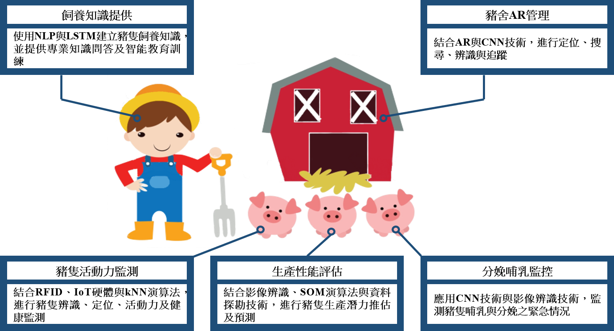
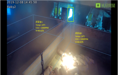
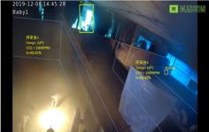
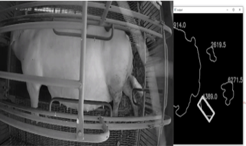
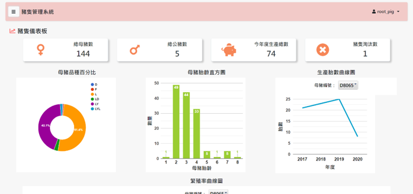
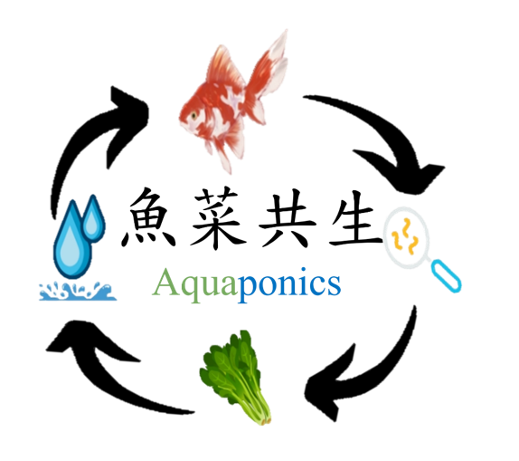
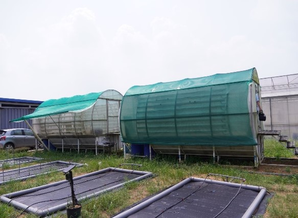

計畫成果
- 研究團隊成果包含科技部研究/產學計畫、教育部人才培育計畫、農委會科技/產學計畫、經濟部產學計畫與法人/廠商產學計畫。
- 共同執行超過15年科技部整合型專案研發計畫。
- 共獲得8次科技部計畫績優團隊獎，獲獎績效為全國第一。
- 執行部會計畫與產學合作計畫，累積總金額高達59,107,063元整。
1.智慧新農業資訊服務平台：以在地豬隻畜牧場為驗證場域

最後做出：
- 豬隻飼養與環境監測資訊系統
- 豬隻飼養知識管理系統
- AR視覺化豬舍管理
- 母豬生產預測
- 豬隻活動力評估履歷

(圖1.1)AR虛實整合應用

(圖1.2)人員辨識追蹤

(圖1.3)母豬分娩辨識

(圖1.4)豬隻儀表板
(圖1.5)環境監測
2.智慧農業物聯網監測與視覺化資管系統之設計與建置-以學校智慧農場魚菜共生為驗證場域(110年教育部研究類計畫)
此計畫：
- 鏈結AIoT智慧物聯網技術與影像辨識、資料視覺化等技術
- 導入於屏科大智慧農場魚菜共生 (Aquaponics) 示範區域
- 整合養殖漁業(Aquaculture)和水耕栽培(Hydroponics)兩需求
- 解決魚類養殖與作物栽培生長速度不一致與收穫量低問題

(圖2.1)魚菜共生概念圖

(圖2.2)計劃試驗場域-屏科大智慧農場溫室